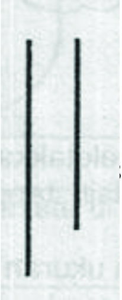
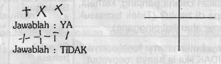

Kuesioner Praskrining untuk Anak 54 bulan
- Dapatkah anak meletakkan 8 buah kubus satu persatu di atas yang lain tanpa menjatuhkan kubus tersebut? Kubus yang digunakan ukuran 2-5 – 5 cm.
- Apakah anak dapat bermain petak umpet, ular naga atau permainan lain dimana ia ikut bermain dan mengikuti aturan bermain?
- Dapatkah anak mengenakan celana panjang, kemeja, baju atau kaos kaki tanpa di bantu? (Tidak termasuk memasang kancing, gesper atau ikat pinggang)
- Dapatkah anak menyebutkan nama lengkapnya tanpa dibantu? Jawab TIDAK jika ia hanya menyebut sebagian namanya atau ucapannya sulit dimengerti.
- Isi titik-titik di bawah ini dengan jawaban anak. Jangan membantu kecuali mengulangi pertanyaan. "Apa yang kamu lakukan jika kamu kedinginan?" "Apa yang kamu lakukan jika kamu lapar?" "Apa yang kamu lakukan jika kamu lelah?" Jawab YA biia anak merjawab ke 3 pertanyaan tadi dengan benar, bukan dengan gerakan atau isyarat. Jika kedinginan, jawaban yang benar adalah "menggigil" ,"pakai mantel’ atau "masuk kedalam rumah’. Jika lapar, jawaban yang benar adalah "makan" Jika lelah, jawaban yang benar adalah "mengantuk", "tidur", "berbaring/tidur-tiduran", "istirahat" atau "diam sejenak"
- Apakah anak dapat mengancingkan bajunya atau pakaian boneka?
- Suruh anak berdiri satu kaki tanpa berpegangan. Jika perlu tunjukkan caranya dan beri anak ands kesempatan melakukannya 3 kali. Dapatkah ia mempertahankan keseimbangan dalam waktu 6 detik atau lebih?
- Jangan mengoreksi/membantu anak. Jangan menyebut kata "lebih panjang". Perlihatkan gambar kedua garis ini pada anak. Tanyakan: "Mana garis yang lebih panjang?" Minta anak menunjuk garis yang lebih panjang. Setelah anak menunjuk, putar lembar ini dan ulangi pertanyaan tersebut. Setelah anak menunjuk, putar lembar ini lagi dan ulangi pertanyaan tadi. Apakah anak dapat menunjuk garis yang lebih panjang sebanyak 3 kali dengan benar?

- Jangan membantu anak dan jangan memberitahu nama gambar ini, suruh anak menggambar seperti contoh ini di kertas kosong yang tersedia. Berikan 3 kali kesempatan. Apakah anak dapat menggambar seperti contoh ini?

- Ikuti perintah ini dengan seksama. Jangan memberi isyarat dengan telunjuk atau mats pads saat memberikan perintah berikut ini: "Letakkan kertas ini di atas lantai". "Letakkan kertas ini di bawah kursi". "Letakkan kertas ini di depan kamu" "Letakkan kertas ini di belakang kamu" Jawab YA hanya jika anak mengerti arti "di atas", "di bawah", "di depan" dan "di belakang”